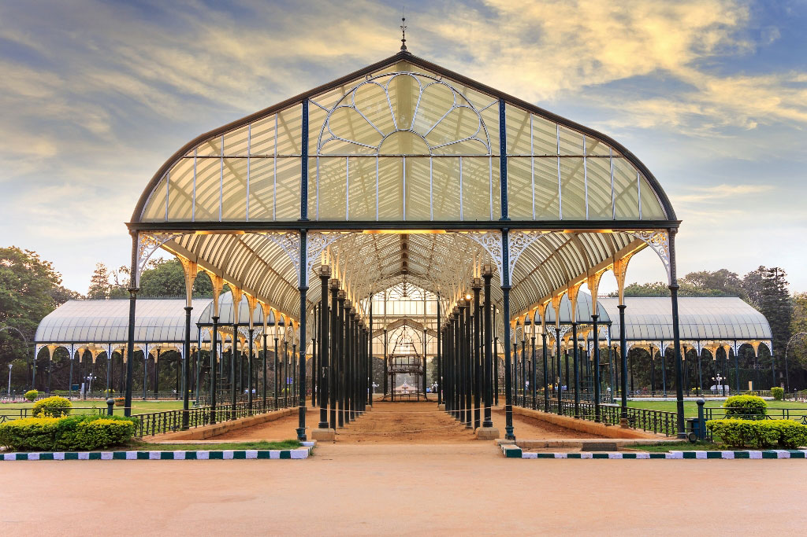

Lalbagh Botanical Garden or simply Lalbagh, is an botanical garden in Bangalore, India, with an over 200-year history. First planned and laid out during the dalavaiship of Hyder Ali and later managed under numerous British Superintendents before Indian Independence Hyder Ali commissioned the building of this garden in 1760 but his son, Tipu Sultan, completed it. A Bagh is Hindustani for garden while the reference of the prefix Lal is debated and could refer to the colour red due to its original floral composition but Lal also means "beloved". Hyder Ali decided to create this garden on the lines of the Mughal Gardens that were gaining popularity during his time. Hyder Ali laid out these famous botanical gardens and his son Tipu Sultan added horticultural we alth to them by importing trees and plants from several countries. Hyder and Tipu's Lalbagh gardens were managed by Mohammed Ali and his son Abdul Khader and were based on design of the Mughal Gardens that once stood at Sira, at a distance of 120 km from Bangalore. At that time, Sira was the headquarters of the strategically important southernmost Mughal "suba" (province) of the Deccan before the British Raj.[2] The Lalbagh gardens were commissioned by the 18th century and over the years it acquired India's first lawn-clock and the subcontinent's largest collection of rare plants.[3] After the British conquest of Kingdom of Mysore in 1799, the garden was under the charge of Major Gilbert Waugh, Company paymaster and in 1814 its control was transferred to the Government of Mysore with an appeal by Waugh to the Marquis of Hastings that it should be under the botanical garden at Fort William, Calcutta. This was accepted and the charge for supervision was given to Nathaniel Wallich 24 April 1819. This continued until 1831 when charge moved to the Mysore . An Agricultural and Horticultural Society had been formed with William Munro, an army officer and amateur botanist in charge of the Bangalore chapter.
From Wikipedia, the free encyclopedia Adiyogi statue Adiyogi Shiva steel burst 2018.jpg Adiyogi Shiva statue in Coimbatore, 2018 MapWikimedia | © OpenStreetMap 10°58′21″N 76°44′26″ECoordinates: 10°58′21″N 76°44′26″E Location Isha Yoga Center, Coimbatore, Tamil Nadu, India Designer Sadhguru Jaggi Vasudev Type Statue Material Steel Width 25 m (82 ft) Height 34 m (112 ft) Visitors 2.19 Million (in 2021–2022) Completion date 24 February 2017 Dedicated to Lord Shiva as Adiyogi 112 ft, symbolizes the 112 possibilities to attain to moksha (liberation) that are mentioned in yogic culture, and also the 112 chakras in the human system.[5][3] A linga called Yogeshwar Linga was consecrated and placed in front of the statue.[6] The Indian Ministry of Tourism has included the statue in its official Incredible India campaign.[7] It is also the venue of a light and sound show on Shiva as a yogi, inaugurated by the former President of India, Ram Nath Kovind.[8]Adiyogi statue Adiyogi Shiva steel burst 2018.jpg Adiyogi Shiva statue in Coimbatore, 2018 MapWikimedia | © OpenStreetMap 10°58′21″N 76°44′26″ECoordinates: 10°58′21″N 76°44′26″E Location Isha Yoga Center, Coimbatore, Tamil Nadu, India Designer Sadhguru Jaggi Vasudev Type Statue Material Steel Width 25 m (82 ft) Height 34 m (112 ft) Visitors 2.19 Million (in 2021–2022) Completion date 24 February 2017 Dedicated to Lord Shiva as Adiyogi 112 ft, symbolizes the 112 possibilities to attain to moksha (liberation) that are mentioned in yogic culture, and also the 112 chakras in the human system.[5][3] A linga called Yogeshwar Linga was consecrated and placed in front of the statue.[6] The Indian Ministry of Tourism has included the statue in its official Incredible India campaign.[7] It is also the venue of a light and sound show on Shiva as a yogi, inaugurated by the former President of India, Ram Nath Kovind.[8Adiyogi statue Adiyogi Shiva steel burst 2018.jpg Adiyogi Shiva statue in Coimbatore, 2018 MapWikimedia | © OpenStreetMap 10°58′21″N 76°44′26″ECoordinates: 10°58′21″N 76°44′26″E Location Isha Yoga Center, Coimbatore, Tamil Nadu, India Designer Sadhguru Jaggi Vasudev Type Statue Material Steel Width 25 m (82 ft) Height 34 m (112 ft) Visitors 2.19 Million (in 2021–2022) Completion date 24 February 2017 Dedicated to Lord Shiva as Adiyogi 112 ft, symbolizes the 112 possibilities to attain to moksha (liberation) that are mentioned in yogic culture, and also the 112 chakras in the human system.[5][3] A linga called Yogeshwar Linga was consecrated and placed in front of the statue.[6] The Indian Ministry of Tourism has included the statue in its official Incredible India campaign.[7] It is also the venue of a light and sound show on Shiva as a yogi, inaugurated by the former President of India, Ram Nath Kovind.[8
Darshan timings The temple is open from 4:30 a.m. to 5:00 am. The day begins with a Grand arati ceremony called mangala-arati followed by worship of Tulasi Devi, Sri Narasimha Arati and Suprabhata Seva for Sri Srinivasa Govinda. The temple again opens at 7:15 a.m. for Shringara Darshana Arati. 5:15 a.m. to 7:15 a.m.: Japa Meditation session. The temple remains open until 1:00 p.m. In the evening the temple is open from 4:15 to 8:15. During weekends and public holidays Temple timings are 4:30 a.m. to 5:00 a.m. 7:00 a.m. to 8:30 p.m. without any break in the afternoon. The evening arati starts at 7:00 where devotees sing kirtan. In the main temple the arati is performed by three priests. This arati is followed again by kirtan where devotees can be seen dancing to the rhythm of "Hare Krishna Hare Rama". The temple is open from 4:30 a.m. to 5:00 am. The day begins with a Grand arati ceremony called mangala-arati followed by worship of Tulasi Devi, Sri Narasimha Arati and Suprabhata Seva for Sri Srinivasa Govinda. The temple again opens at 7:15 a.m. for Shringara Darshana Arati. 5:15 a.m. to 7:15 a.m.: Japa Meditation session. The temple remains open until 1:00 p.m. In the evening the temple is open from 4:15 to 8:15. During weekends and public holidays Temple timings are 4:30 a.m. to 5:00 a.m. 7:00 a.m. to 8:30 p.m. without any break in the afternoon. The evening arati starts at 7:00 where devotees sing kirtan. In the main temple the arati is performed by three priests. This arati is followed again by kirtan where devotees can be seen dancing to the rhythm of "Hare Krishna Hare Rama". The temple is open from 4:30 a.m. to 5:00 am. The day begins with a Grand arati ceremony called mangala-arati followed by worship of Tulasi Devi, Sri Narasimha Arati and Suprabhata Seva for Sri Srinivasa Govinda. The temple again opens at 7:15 a.m. for Shringara Darshana Arati. 5:15 a.m. to 7:15 a.m.: Japa Meditation session. The temple remains open until 1:00 p.m. In the evening the temple is open from 4:15 to 8:15. During weekends and public holidays Temple timings are 4:30 a.m. to 5:00 a.m. 7:00 a.m. to 8:30 p.m. without any break in the afternoon. The evening arati starts at 7:00 where devotees sing kirtan. In the main temple the arati is performed by three priests. This arati is followed again by kirtan where devotees can be seen dancing to the rhythm of "Hare Krishna Hare Rama".
Address: Velliangiri Foothills, Mahashivaratri Grounds, Ishana Vihar, Coimbatore, Tamil Nadu 641114